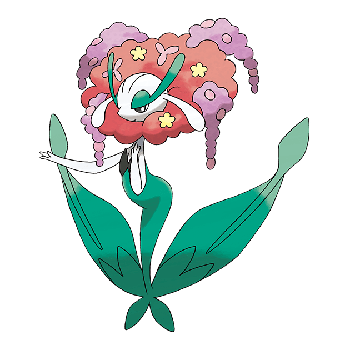

MongoDB.local Taipei 2023
活動日期: 2023/9/7
WARNING: 因為很多議程，我其實聽不太懂，所以下方的表格是當天所有的活動中，我有詳細描述的部分
| 議程/工作坊 | |
|---|---|
| MongoDB.local Taipei 主題演講 | ✓ |
| 趨勢科技：基於 MongoDB Change Stream 建立事件驅動系統 | |
| 從 MLOps 到生成式 AI：如何使用 MongoDB 將 ML 導入您的服務 | |
| Crypto Exchange 的旅程: 現實的挑戰與 MongoDB/Google Cloud 解決方案 | |
| 來自 MongoDB 的最新訊息 & MongoDB 7.0 重磅登場 | |
| 午餐 | ✓ |
| 使用 MongoDB Relational Migrator 現代化改造您的應用程式 | |
| 永豐銀行如何運用 MongoDB 優化使用者數位通路體驗 | ✓ |
| 建立直觀的資料發現體驗：使用 Atlas Search 的提示和技巧 | |
| 實機演練：MongoDB Time Series for IoT | |
| AccuHit X MongoDB Atlas：系統架構師視角下的行銷大數據解決策略 | |
| Openshift with security | |
| Noodoe：如何使用 MongoDB 創造流暢的充電體驗 | |
| 實機演練：MongoDB Atlas Vector Search | ✓ |
| 實踐 Time Series：跨行業的實際應用情境 |
報到
活動開始的一個禮拜前，主辦會發報到通知的email，裡面會有報到用的QRcode，
- 會有一個email確認你會出席
- 還會有電話確認（她說他們一向都會 double check)
活動當天憑報到通知函/報到編號及名片2張完成報到手續，謝謝您的配合。
這是 email 中要求的報到方式，不過我只有用 email 裡面的QRcode 報到，可能是因為我是學生吧（報名的時候好像要填組織，如果未來有機會再補充），所以當報到櫃台的服務人員問我的名片，我告訴她我沒有名片，她也沒有再要求我。報到後就能拿到識別證，午餐&工作坊都會需要識別證，千萬別搞丟了!
主議程
MongoDB.local Taipei 主題演講
| 講者 | Peder Ulander |
|---|---|
| 職稱 | MongoDB - Chief Marketing & Strategy Officer(行銷總監) |
因為是以全英文的方式演講，所以在進入會場以前，有一張桌子可以借口譯機，用身分證/健保卡押證件即可借閱(雖然第一次來，不過我想挑戰看看，所以沒有借口譯機。一個小時聽下來，撇除專業知識以外，大致上知道他想表達的意思，希望明年再來參加的時候能更懂)
今天的 MongoDB.local Taipei 是他們辦的 29 場 local 活動中的其中一場。
MongoDB 的起源
他們在做了調查之後，發現開發者花費大部分的時間在處理資料。
以前的都是 vertical scale(也就是在現有的 server 上增加 CPU, RAM, or storage)，為了 horizontal scale(把資料分散在多個server上)，所以他們開發MongoDB。
被企業採用
全球有很多企業採用 mongodb ，臺灣的企業也有，包括17直播(以前的 mongodb day 也有來分享)、趨勢科技、noodoe、永豐銀行等等
{kind=link}
過去的做法，為了每一種要求（payments, real time logistics, Fraud detection…)，弄了很多很複雜的系統 ⇒ 應該要找一個統一的方法處理一堆問題
{kind=link}
{kind=link}
後續的部分主要說明下方2點，因為我聽不懂，所以就先跳過吧!
- MongoDB有…功能，所以可以做到…
- MongoDB 7.0 的新功能
永豐銀行如何運用 MongoDB 優化使用者數位通路體驗
| 講者 | 楊文淵 |
|---|---|
| 職稱 | 永豐銀行 Bank SinoPac - 專業副理 |
使用 RDBMS 遇到的問題
- 交易明細的查詢會限制時間區間、交易筆數
- 帳戶明細與信用卡明細需要分開查
- 信用卡明細還細分成未請款、已請款…
原因
(這邊表格以及下方的解法是我自己揣摩的實作方式，不代表永豐銀行的真實系統)
資料量很大的時候會拆表
| 帳號 | 日期 | 存入 | 餘額 |
|---|---|---|---|
| 0001 | 2023/9/1 | 300 | 1300 |
| 0002 | 2023/9/1 | 50 | 10050 |
| 0001 | 2023/9/3 | 900 | 1700 |
| 0001 | 2023/9/5 | 400 | 2000 |
| 帳號 | 日期 | 提出 | 餘額 |
|---|---|---|---|
| 0001 | 2023/9/2 | 500 | 800 |
| 0002 | 2023/9/3 | 7000 | 3050 |
| 0001 | 2023/9/4 | 100 | 1600 |
需要大量的join才能取得下方的表格 ⇒ 所以查詢都會限制時間區間，限制資料量，避免系統崩潰
| 帳號 | 日期 | 存入 | 提出 | 餘額 |
|---|---|---|---|---|
| 0001 | 2023/9/1 | 300 | 1300 | |
| 0001 | 2023/9/2 | 500 | 800 | |
| 0001 | 2023/9/3 | 900 | 1700 | |
| 0001 | 2023/9/4 | 100 | 1600 | |
| 0001 | 2023/9/5 | 400 | 2000 |
解法
因為 MongoDB 可以透過 ID 直接找到屬於你的交易明細，所以就能省去 RDBMS 在 join的過程中，產生很多你不需要的資訊
const user_statement = await statement.findById(user_id);午餐
午餐是憑是憑識別證下方的午餐券進行兌換。
坐在位置上，服務人員會把餐盒送過來，把午餐券從識別證上撕下來，交給他/她就可以拿到餐盒
{kind=link}
{kind=link}
餐盒是萬豪酒店提供的，菜色的部分因為我不知道菜名是什麼(只覺得很好吃)，就不詳細介紹
{kind=link}
{kind=link}
工作坊
參加工作坊有幾點要注意
- 要自己帶筆電
- 現場沒有電源，要自己注意電量
- 遇到問題就舉手，現場大概會有 2~3 位專家幫你解決問題
MongoDB Time Series for IoT 實機演練
| 講者 | 吳明宗 |
|---|---|
| 職稱 | MongoDB - 資深顧問工程師 |
Time Series Data 是甚麼?
{kind=link}
假設你有一個智能插座，它每 15 分鐘都會記錄你的用電數據，那你能得到的資料(如下)就是一連串依據時間排序的感測器數值，這就是 Time Series Data
[
{"ts": {"$date": "2020-05-15T20:45:00+00:00"}, "dc_power": {"$numberDecimal": "7835.571429"}},
{"ts": {"$date": "2020-05-15T21:00:00+00:00"}, "dc_power": {"$numberDecimal": "9555"}},
{"ts": {"$date": "2020-05-15T21:15:00+00:00"}, "dc_power": {"$numberDecimal": "10642.75"}}
]實作
MongoDB Atlas 有提供圖表的服務，讓你可以即時追蹤數據的變化，結果如下
{kind=link}
MongoDB Atlas Vector Search 實機演練
| 講者 | 張凱霖 |
|---|---|
| 職稱 | MongoDB - 資深顧問工程師 |
{kind=link}
假設你想找的是上圖的數碼寶貝，但是你卻想不起它的正確名稱，手上也沒有圖片可以以圖搜圖，只記得看起來像戴帽子的小狗，
於是你 google 的結果如下
{kind=link}
根本找不到你心中的那個APP獸啊!!!
什麼是 Vector Search
可以把圖片和文字轉換成向量，再透過演算法，找到最相似的圖片。
{kind=link}
實作
(一開始想要很詳細的說明，但是裡面的細節我還沒有搞懂，所以搞懂之後會把細節放在 github 上) 講師提供了一個寶可夢的資料集，教我們如何運用 python + MongoDB 來實現”用文字描述的方式搜尋寶可夢”
- ex: 搜尋”紅色的花”，結果如下

{kind=link}
後續
9/15 收到 MongoDB 的 email，裡面有所有講者的簡報連結(工作坊的也有)，靠著這些簡報才把永豐和 Time Series 的內容補上(當天只聽懂了，但是缺少一些細節，所以寫得不清不楚)。
{kind=link}